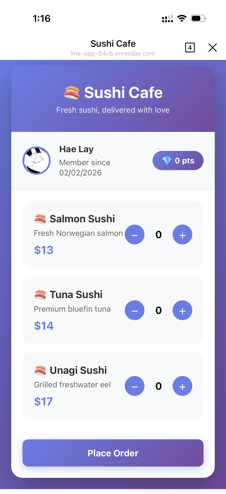
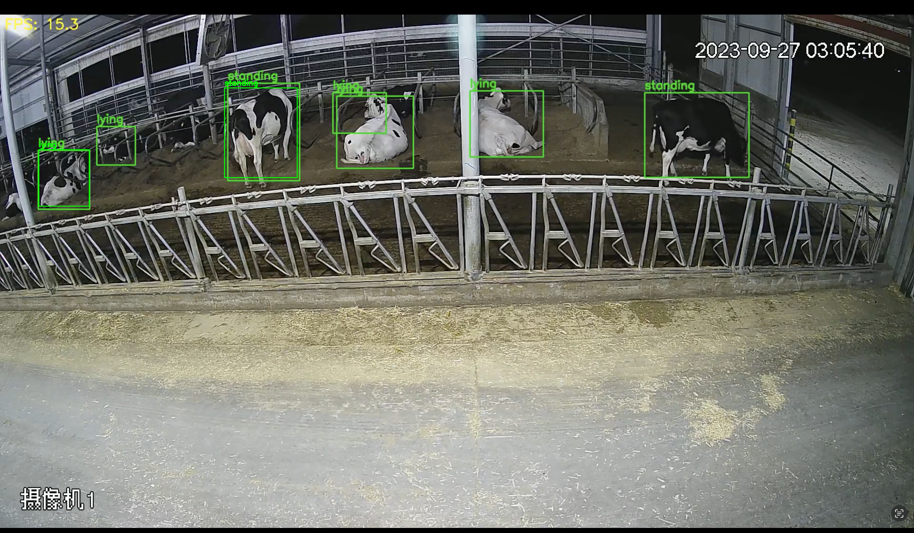
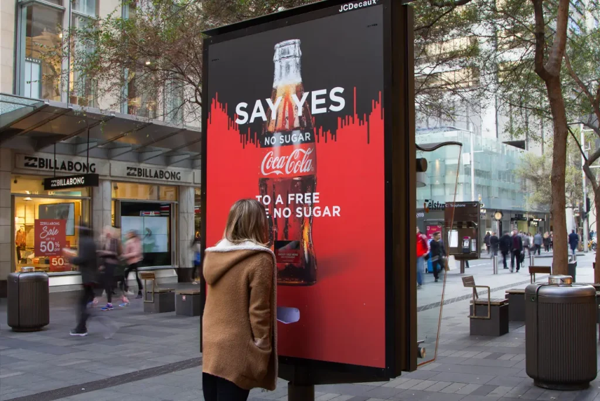
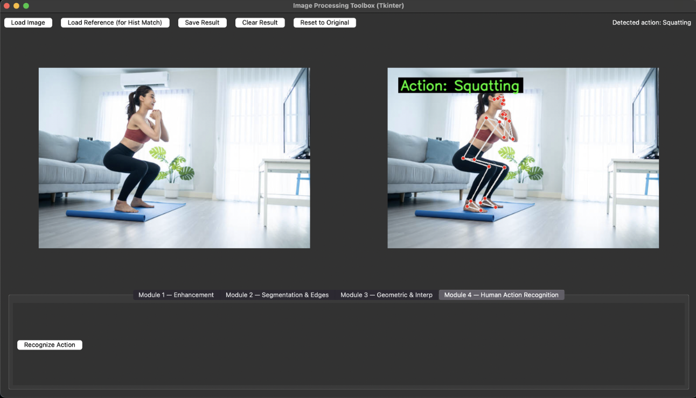
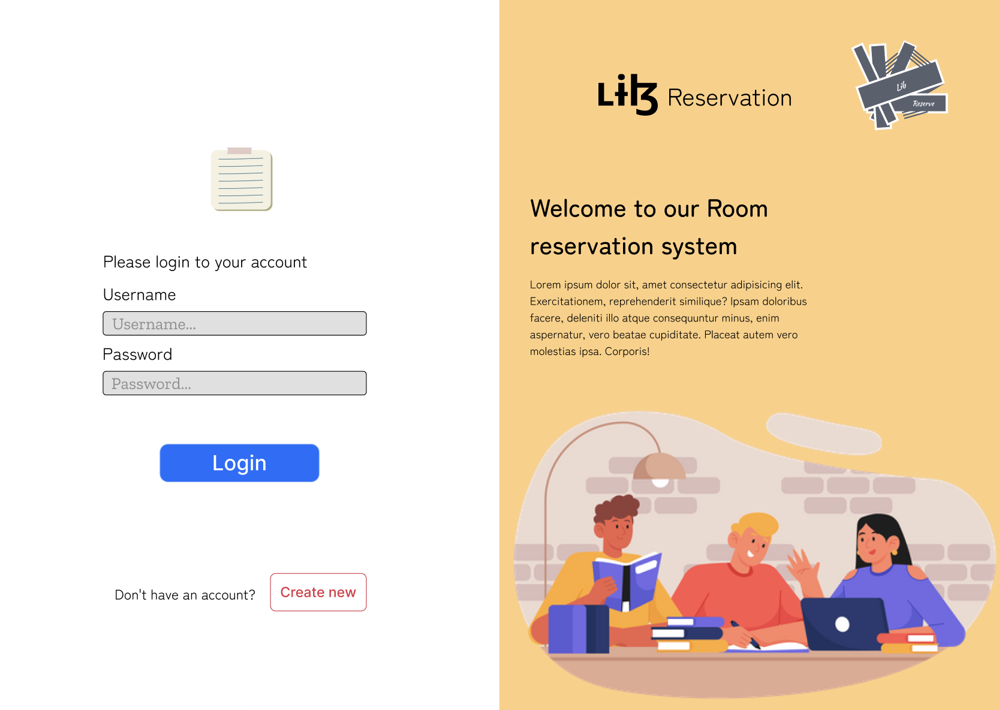
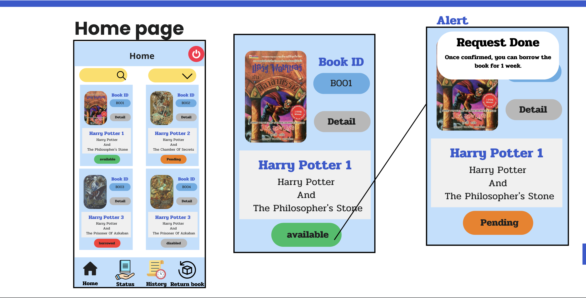
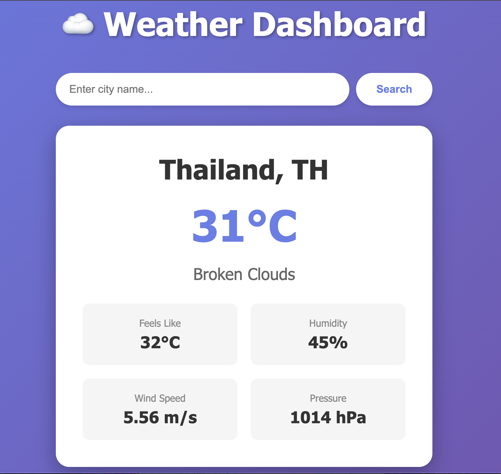
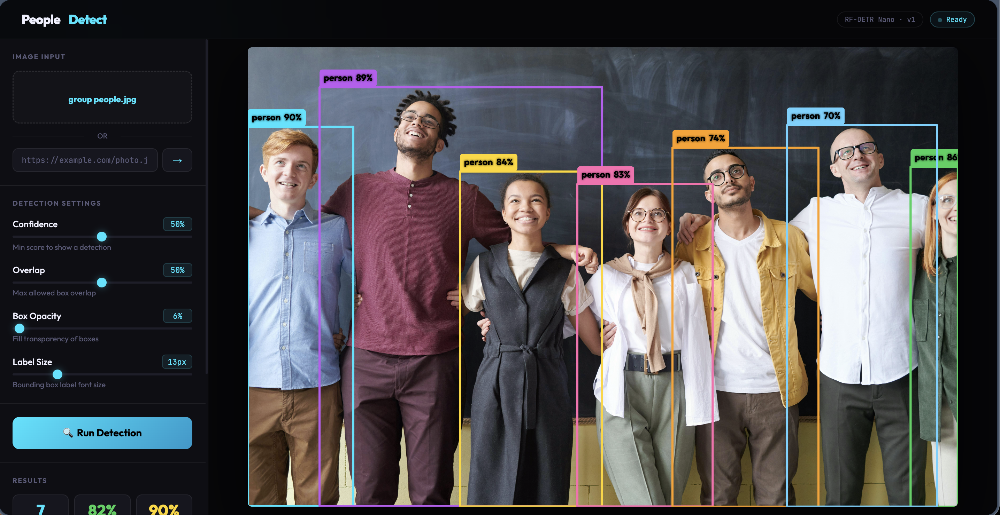

LINE Bot Ordering System
Full-StackFull-stack ordering system with LINE API — role dashboards (user/shop/admin), real-time orders, points rewards, and Rich Menu.
Computer Engineering graduate specializing in AI/ML and computer vision. I build practical systems — from AI-powered detection systems to full-stack web apps — and turn real-world data into tools people can actually use.
Passionate about building systems that turn data into insight
I'm a recent Computer Engineering graduate based in Chiang Mai, Thailand. I enjoy building practical systems through hands-on projects and real-world experience.
My main interests are AI/ML and computer vision. I also work with web and app development to create clean, usable interfaces.
I like turning real-world data into useful tools — clean pipelines, clear UI, and solutions that can be tested in practice.
YOLO, OpenCV, MediaPipe — building vision systems from scratch
End-to-end pipelines: data collection → training → deployment
Exploring web dev, mobile apps, and cloud deployments
CAS Cogniser (Thailand)
Jan – Apr 2026 · Chiang Mai
Built LINE Bot Sushi Cafe ordering system with Node.js, LINE LIFF, and Supabase — role-based dashboards, real-time orders, and points rewards.
CAS Cogniser (Thailand)
Jun – Jul 2025 · Chiang Mai
Voice-Activated Digital Signage and Smart Retail Analytics (people counting, face recognition, heat-map) using Python, YOLO, and OpenCV.
Personal & Team Projects
2022 – Present
Built responsive web and mobile apps, trained YOLO models for cattle behavior and human action recognition.
B.Eng in Computer Engineering
Aug 2022 – Feb 2027 (Expected) · Chiang Rai
GPAX · 3.82
A showcase of my recent work and technical expertise

Full-stack ordering system with LINE API — role dashboards (user/shop/admin), real-time orders, points rewards, and Rich Menu.

Computer vision system classifying cow behaviors from CCTV footage to support automated estrus detection.
People counting with entry/exit tracking, face recognition matched against a database, and live heat-map dashboard.

Voice commands to play/stop/switch ads in real time with continuous listening, auto-demo fallback, and dynamic mapping.

Modular image processing pipeline — enhancement, segmentation, edge detection, and action classification.

Web-based room reservation system with clean UI and complete booking flow.

Mobile app UI for login, book list, and borrow request with a simple and clean user flow.

Real-time weather dashboard with city search, current conditions, and 5-day forecast powered by OpenWeatherMap API.

Real-time people detection web app powered by a custom-trained Roboflow RF-DETR model. Upload any image to detect and count people with adjustable confidence and overlap thresholds.
Technologies and tools I use to bring ideas to life
Open to Projects, collaborations, and interesting problems